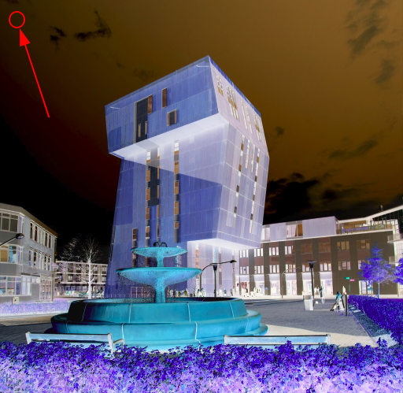

Bewerkingen met bits¶
Afbeeldingen en compressie
Tot hoeveel kan je tellen?¶
Binair |
Decimaal |
|
|---|---|---|
1 bit |
|
1 |
2 bits |
|
3 |
3 bits |
|
7 |
4 bits |
|
15 |
5 bits |
|
31 |
6 bits |
|
63 |
7 bits |
|
127 |
8 bits |
|
255 |
16 bits |
|
65535 |
n bits |
… |
\(2^n - 1\) |
Het patroon dat je ziet is dat met elke extra bit de waarde wordt verdubbeld, waar de maximale waarde wordt bepaald door \(2^n - 1\).
Sheep overflow¶
Of eigenlijk een integer overflow!

Hoeveel schapen bits kunnen hier maximaal worden geteld?
Afhankelijk van onder andere de taal en het systeem kan, wanneer de hoogst mogelijke waarde wordt bereikt, deze waarde overgaan (overflowen) naar de laagst mogelijke waarde die kan worden bewaard. In dit geval is sprake van een signed integer, een integer waarde die zowel positief als negatief kan zijn. De aantallen impliceren een 16 bit ruimte (van -32768 tot en met 32767 betekent 65535 mogelijke waarden). Terzijde, met één schaap per seconde, hoe lang werden hier schapen geteld tot de overflow?
Python?¶
max_sheep = 32767
max_sheep + 1
32768
Gelukkig, integers zijn voor Python groter dan 16 bits! Maar hoe groot kunnen integers dan wél zijn?
Googol!¶
g = 10**100
import sys
sys.maxsize
9223372036854775807
Met sys.maxsize vraag je de woord grootte op en je zal zien dat deze gelijk is aan 64 bits (althans, op mijn systeem).
g > sys.maxsize
True
Getallen kunnen voor Python groter zijn dan 64 bits! We weten dat 64 bits een fysieke grens kan zijn (bijvoorbeeld als de woord grootte van een architectuur) en kunnen hier uit afleiden dat Python dit intern (in software, met algoritmen!) oplost. Voor Python kunnen op deze manier getallen zo groot zijn als het geheugen van jouw systeem dit toelaat (maar is dus nog steeds begrensd!).
Ariane 5¶

HumanError
Geen IndexError of TypeEror maar een HumanError. Door een software fout werd een 64 bit waarde (nieuw in Ariane 5!) omgezet naar een 16 bit waarde (wat in Ariane 4 werd gebruikt…). In 1996 moest na 37 seconden de eerste vlucht van Ariane 5 worden afgebroken omdat een integer overflow error de navigatie onbruikbaar maakte.


This condition is caused by a software counter internal to the GCUs that will overflow after 248 days of continuous power. We are issuing this AD to prevent loss of all AC electrical power, which could result in loss of control of the airplane.
HumanError
Een heel serieuze waarschuwing in 2015! Dit zou heel goed een 32 bit signed integer overflow kunnen zijn geweest. 231 is het aantal seconden in 248 dagen vermenigvuldigd met 100, dus waarschijnlijk ging het hier om een teller die tijd tot honderdsten van seconden nauwkeurig bijhoudt.
WeNeverThoughtError¶


PSY Gangnam Style, de video met nu bijna 4 miljard views. Tot voor de Youtube upgrade naar 64 bits bleef de teller staan op het maximaal aantal views dat met 32 bits mogelijk is. Zie verder ook deze blast from the past!
Afbeeldingen zijn ook bits¶

Al zou je dit soms vergeten … een afbeelding van de Kirkjufell berg, IJsland.
Representatie¶
Pixels en kleuren

Een fijne psychedelische afbeelding! Dit is iets wat je zou kunnen zien als je met een vergrootglas jouw beeldscherm gaat bekijken. Let ook op dat dit een rasterpatroon is met rijen en kolommen van pixels.
Kleurkanalen¶
Een pixel is een samenstelling van hoeveelheden
Rood
Groen
Blauw

Pixel op positie 42, 42
Rood = 216 (van 255)
Groen = 234 (van 255)
Blauw = 254 (van 255)

Nieuwe pixel op positie 42, 42
Rood = 39 (was 216)
Groen = 21 (was 234)
Blauw = 1 (was 254)
Welke handeling is hier toegepast?
Bits¶
Rood 255 maximaal
Groen 255 maximal
Blauw 255 maximaal
Hoeveel bits is een enkel kleurkanaal (rood, groen of blauw)?
Een afbeelding¶
Is een … LoLoL?
[
[ [39, 21, 1], [39, 18, 2], ... ],
[ [38, 21, 1], [39, 18, 1], ... ],
[ [38, 21, 2], [39, 17, 1], ... ]
]
De breedte én hoogte van een afbeelding!
Compressie¶
Te veel bits!


Van 3.0 MB naar 64.4KB!

… gooi 98% van het oppervlakte weg?


Compressietypen¶
Lossless
geen verlies van informatie of kwaliteit
kan naar de oorspronkelijke data worden omgezet

Lossy
verlies van informatie of kwaliteit
kan niet naar de oorspronkelijke data worden omgezet

Afbeeldingen zijn bits¶
In het bijzonder binaire afbeeldingen!

Een 8x8 binaire afbeelding encoderen
10101010
01010101
10101010
01010101
10101010
01010101
10101010
01010101
Een encodering als ruwe bits, een reeks van 64 bits in totaal
"1010101001010101101010100101010110101010010101011010101001010101"
Dit zijn veel bits! Hoe zouden we dit kunnen comprimeren? Daar hebben we een strategie voor nodig!
De strategie¶
Run-length encoding (RLE)
Een strategie voor het (lossless) comprimeren van data
alliiiiiieeeensssssssssssssssss
a|ll|iiiiii|eeee|n|sssssssssssssssss
a1l2i6e4n1s17
Van 31 naar 13 karakters, dit is een heel succesvolle compressie zonder verlies aan data!

We zullen zien dat deze afbeelding ook heel goed te comprimeren valt.

Een afbeelding als aaneengesloten reeksen van bits
00000000
00000000
11111111
11111111
00000000
00000000
00000000
00001111
"0000000000000000111111111111111100000000000000000000000000001111"
De bovenstaande 8x8 binaire afbeelding als een reeks bits waar 0 staat voor wit en 1 voor zwart.
Lossless compressie¶
"0000000000000000111111111111111100000000000000000000000000001111"
Hoe kan een reeks meer efficient, maar nog steeds binair, worden weergegeven?
Encodering¶
"0000000000000000|1111111111111111|0000000000000000000000000000|1111"
Een mogelijke binaire oplossing?
bit + aantal herhalingen | bit + aantal herhalingen | ...
Let op, we hebben hier | voor de duidelijkheid als scheidingsteken gebruikt, deze zijn natuurlijk geen onderdeel van de reeks!
De eerste reeks¶
16 keer 0
"0000000000000000"
16 decimaal is 10000 binair
"010000"
bit + aantal herhalingen
De gehele reeks¶
"0000000000000000|1111111111111111|0000000000000000000000000000|1111"
"010000"
Zestien keer 0
"010000" + "110000"
Zestien keer 0 plus zestien keer 1
"010000" + "110000" + "011100"
Zestien keer 0 plus zestien keer 1 plus achtentwintig keer 0
"010000" + "110000" + "011100" + "1100"
Zestien keer 0 plus zestien keer 1 plus achtentwintig keer 0 plus vier keer 1
Resultaat
"0100001100000111001100"
Als je goed kijkt lopen de coderingen soms in elkaar over. Het resultaat is onduidelijk, we kunnen niet met zekerheid achterhalen wat de oorspronkelijk bits en lengte van de reeksen waren.
Encodering met vaste lengte¶
Een beter algoritme: blokken met vaste lengte!
"0000000000000000|1111111111111111|0000000000000000000000000000|1111"
Blokken van 8 bits (1 byte)
"0**10000"
"0**10000" + "1**10000" + "0**11100" + "1****100"
Padding¶
Wat te doen met de lege * plekken? Vullen met nullen!
"00010000" + "10010000" + "00011100" + "10000100"
Resultaat
"00010000100100000001110010000100"
Vullen met nullen, of soms ook wel voorloopnullen genoemd.
Nullen vullen¶
4 * "0"
'0000'
Bedenk dat je Python strings kan vermenigvuldigen en in dit geval kan dat heel goed van pas komen!
Tot hoeveel kan je tellen¶
In een 8 bits blok is het eerst bit de “initiële pixel” en de resterende 7 bits om het aantal herhalingen aan te geven
Wat is de langste herhaling die met 7 bits kan worden vastgelegd?
Het maximum aantal herhalingen is \(2^7 - 1 = 127\).
Wat kan je doen als de herhaling langer is dan 7 bits?
Begin vanaf de 128e pixel een nieuw 8 bits blok!
De functie¶
def compress(I):
"""Returns the RLE of the input binary image, I
"""
Input: een binaire afbeelding I
"0000000000001111111111111111111100000000000000000000011111111111"
Output: de RLE gecomprimeerde afbeelding
"00001100100101000001010110001011"
Quiz¶
Vraag 1¶
De volgende reeks bits
"0000000000000000000000000000000000000000001111111111111111111111111111111"
heeft 42 opeenvolgende nullen en 31 opeenvolgende enen
Wat is de RLE gecomprimeerde waarde (of met andere woorden, de output van
compress(I))?
Oplossing¶
"00101010|10011111"
Vraag 2¶
Een hulpfunctie voor het vinden van het EERSTE geval
def front_num(s):
"""Returns the # of times the first
element of the input s appears
consecutively at the start of s
"""
if len(s) <= 1: # base case
return ...
elif ...: # recursive case
return ...
else: # not a sequence
return ...
Bijvoorbeeld
assert front_num("1111010") == 4
assert front_num("00110010") == 2
Oplossing¶
def front_num(s):
"""Returns the # of times the first
element of the input s appears
consecutively at the start of s
"""
if len(s) <= 1: # base case
return len(s)
elif s[0] == s[1]: # recursive case
# add 1 to the rest
return 1 + front_num(s[1:])
else: # not a sequence
return 1
assert front_num("1111010") == 4
assert front_num("00110010") == 2
Beste en slechtste compressie¶

Tot hoeveel bits kan deze 8x8 binaire afbeelding worden gecomprimeerd?
Deze afbeelding kan tot een enkel blok worden gecomprimeerd (een enkel blok van 8 bits).

Tot hoeveel bits kan deze 8x8 binaire afbeelding worden gecomprimeerd?
Deze afbeelding kan niet efficiënt worden gecomprimeerd en zal 512 bits groot zijn (8x8 blokken van elk 8 bits).
Alles bits!¶
Afbeeldingen, tekst, geluid, data
Zelfs de string vier*twee wordt gerepresenteerd als een sequentie van bits…
"vier*twee"
9 ASCII karakters, elk 1 byte groot is 72 bits in totaal
"01110110011010010110010101110010|00101010|01110100011101110110010101100101"